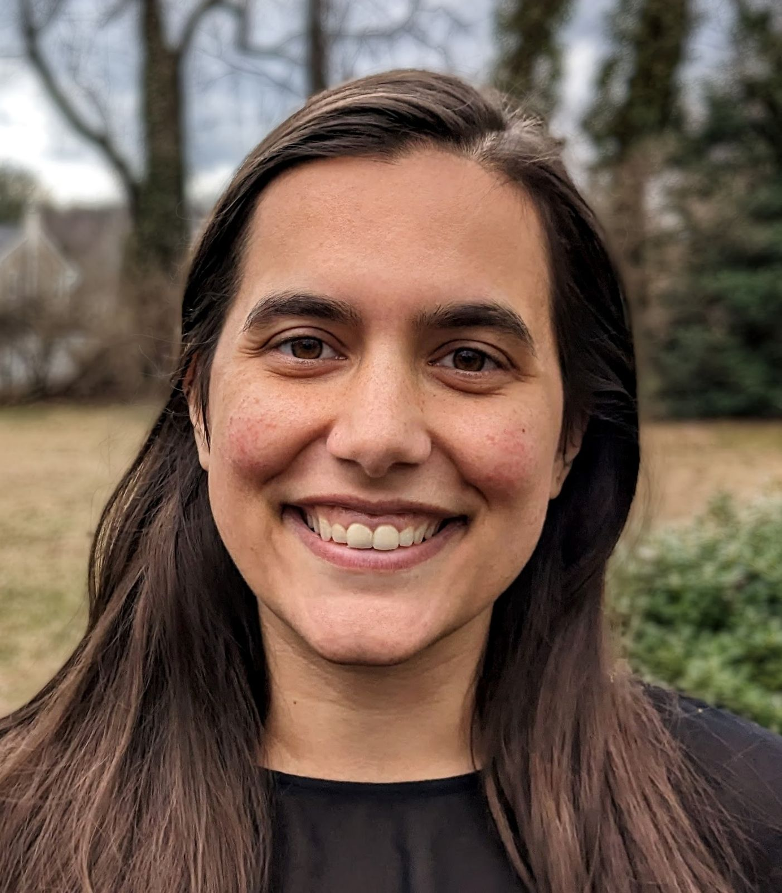

About
I am an Assistant Professor in the Robotics Department (primary) and Computer Science and Engineering Department at University of Michigan. I lead the Mapping and Motion Lab, which studies robot learning and computer vision. Our research is listed on the lab website.
Previously, I have worked at the Boston Dynamics AI Institute, NVIDIA Research, and Lockheed Martin Corporation. I received my PhD in computer science in the GRASP lab at University of Pennsylvania, co-advised by Dr. Kostas Daniilidis and Dr. Nikolai Matni. I received an M.A. in Mathematics, M.A. in Economics, and B.S. in Mathematics and Economics from The University of Alabama in 2014.
Teaching
- 3D Robot Perception ROB 498/599 Fall 2026, Winter 2025
- Computer Vision EECS 442 Fall 2025
- Localization, Mapping, and Navigation ROB 330 Fall 2024